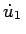
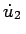
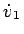
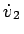
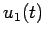
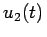
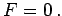
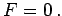
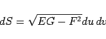

Inhalt Index DeskTop Bronstein

 Geometrie Differentialgeometrie Flächen Linienelement auf einer Fläche
Geometrie Differentialgeometrie Flächen Linienelement auf einer Fläche


berechnet.
Die Koeffizienten E, F und G sind für den Punkt P zu bestimmen, und , , ,  stellen die ersten Ableitungen von , , v1(t) und v2(t) für den, dem Punkt P entsprechenden Parameterwert dar. Wenn der Zähler von (3.527) verschwindet stehen beide Kurven senkrecht aufeinander. Die Orthogonalitätsbedingung für die Koordinatenlinien  und
und  lautet 
lautet 
mit
|  | (3.528b) |
berechnet werden. Man nennt dS Flächenelement.
Die Berechnung von Längen, Winkeln und Flächeninhalten auf Flächen ist mit Hilfe der Formeln (3.526, 3.527, 3.528a,b) möglich, wenn die Koeffizienten E, F und G der ersten quadratischen Fundamentalform bekannt sind. Somit definiert die erste quadratische Fundamentalform die Metrik auf der Fläche.